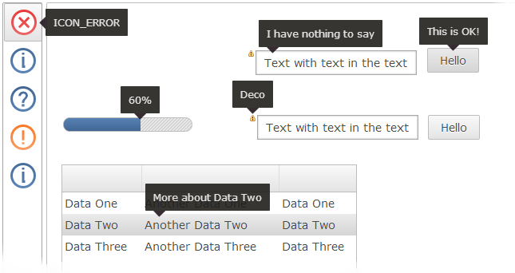

The FileUpload widget now allows selecting and uploading multiple files at once
in HTML5 enabled browser. To enable this feature, create the widget with the SWT.MULTI
style flag like this:
FileUpload fileUpload = new FileUpload( parent, SWT.MULTI );
To obtain the filenames from the widget the method getFileNames has been introduced.
The method getFileName (singular) also still exists and will return the first
selected file.
Browser (such as Internet Explorer 8) that do not support this feature will simply ignore
the MULTI flag.
setToolTipText method will now appear faster.
The exact time until the ToolTip appears depends on the widget (they appear faster on Button-like widgets).ToolTips have a new black look in the default theme.

A new theming element has been introduced: Widget-ToolTip-Pointer.
The element has a single property "background-image" and four states: "up", "down", "left", "right".
If set, the image may be attached on the ToolTip to point towards the widget it describes.
The states are set depending on which direction the ToolTip is supposed to point.
The image should match the background and/or border color of the ToolTip theming.
A full set of four images would be defined like this:
Widget-ToolTip-Pointer {
background-image: none;
}
Widget-ToolTip-Pointer:up {
background-image : url( tooltip-up.png );
}
Widget-ToolTip-Pointer:down {
background-image : url( tooltip-down.png );
}
Widget-ToolTip-Pointer:left {
background-image : url( tooltip-left.png );
}
Widget-ToolTip-Pointer:right {
background-image : url( tooltip-right.png );
}